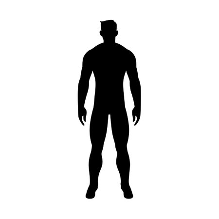
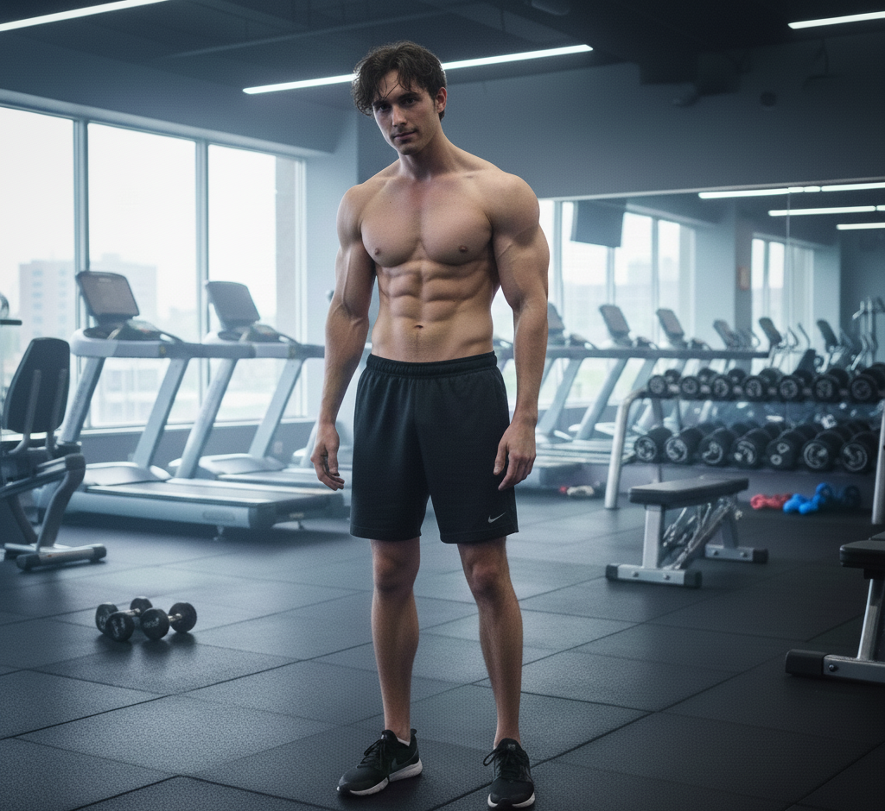
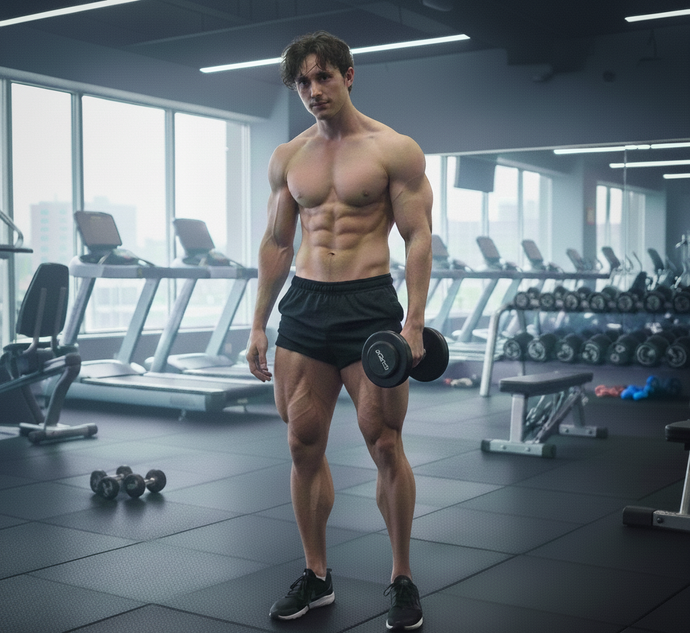

Principiante
Perfecto para quienes están comenzando su viaje fitness


Rutina Semanal para Principiantes
Lunes - Cardio Ligero
- Caminata rápida: 20 minutos
- Estiramientos: 10 minutos
- Ejercicios de respiración: 5 minutos
Miércoles - Fuerza Básica
- Sentadillas: 3 series x 10 repeticiones
- Flexiones de rodillas: 3 series x 8 repeticiones
- Plancha: 3 series x 20 segundos
- Abdominales: 3 series x 10 repeticiones
Viernes - Flexibilidad
- Yoga básico: 25 minutos
- Estiramientos completos: 15 minutos
- Relajación: 10 minutos
Consejos:
Descansa entre series (30-60 segundos). Escucha a tu cuerpo y no te esfuerces demasiado. La consistencia es más importante que la intensidad.
Intermedio
Para quienes ya tienen experiencia y buscan un desafío mayor


Rutina Semanal Intermedia
Lunes - Tren Superior
- Flexiones: 4 series x 15 repeticiones
- Fondos en silla: 4 series x 12 repeticiones
- Plancha lateral: 3 series x 45 segundos cada lado
- Remo con peso: 3 series x 12 repeticiones
Miércoles - Tren Inferior
- Sentadillas: 4 series x 15 repeticiones
- Zancadas: 3 series x 12 cada pierna
- Elevaciones de talón: 4 series x 20 repeticiones
- Puente de glúteos: 3 series x 15 repeticiones
Viernes - Cardio y Core
- HIIT: 20 minutos (30 seg on / 30 seg off)
- Abdominales variados: 4 series x 20 repeticiones
- Plancha completa: 4 series x 60 segundos
- Mountain climbers: 3 series x 30 repeticiones
Consejos:
Aumenta gradualmente la intensidad. Combina ejercicios de fuerza con cardio para mejores resultados. Descansa 1-2 días entre sesiones intensas.
Avanzado
Rutinas intensas para atletas experimentados

Rutina Semanal Avanzada
Lunes - Push (Empuje)
- Flexiones con palmada: 4 series x 10 repeticiones
- Fondos avanzados: 5 series x 15 repeticiones
- Plancha con elevación: 4 series x 20 repeticiones
- Pike push-ups: 4 series x 12 repeticiones
- Cardio: 15 minutos HIIT
Miércoles - Pull (Jalón)
- Dominadas: 5 series x máximo
- Remo invertido: 4 series x 15 repeticiones
- Superman: 4 series x 20 repeticiones
- Plancha lateral avanzada: 3 series x 60 segundos
- Cardio: 20 minutos moderado
Viernes - Legs (Piernas) y Core
- Sentadillas con salto: 5 series x 15 repeticiones
- Zancadas con salto: 4 series x 12 cada pierna
- Pistol squats: 3 series x 8 cada pierna
- Core completo: 25 minutos
- HIIT final: 15 minutos
Sábado - Full Body
- Circuito completo: 4 rondas
- Burpees: 20 repeticiones
- Mountain climbers: 30 repeticiones
- Jump squats: 15 repeticiones
- Plancha: 60 segundos
- Descanso entre rondas: 2 minutos
Consejos:
Mantén la forma correcta incluso con alta intensidad. Hidrátate bien y asegúrate de tener una nutrición adecuada. Escucha a tu cuerpo para evitar lesiones.